Chat
Approved application · approved logoEvery image below is an actual canonical PNG. Open an image for its full resolution. These are authored design scenes, not current-app browser captures.
Message could not send
chat-send-errorActions and implementation pointers
+ New page · Journal · Explore · All pages · ⌄ · Reflections · › · Reading · Turn into a page · Explore this note · Ask Journl · Linked context · Instant ⌄ · ↑ · Entries · Timeline · Nov 16 · History · Close · Instant · Thinking
apps/web/src/components/assistant-ui/thread-components.tsxapps/web/src/components/assistant-ui/thread-sources.tsx

SHA256 e838088c5f207f8dcfee02d689fb2c4d90843ec9d16fc6e2e3e7e38b4a18b4ca

SHA256 e54ea38b30642823f253a9da5a11e9a2093694000c67084ae3a1f9659ab71792

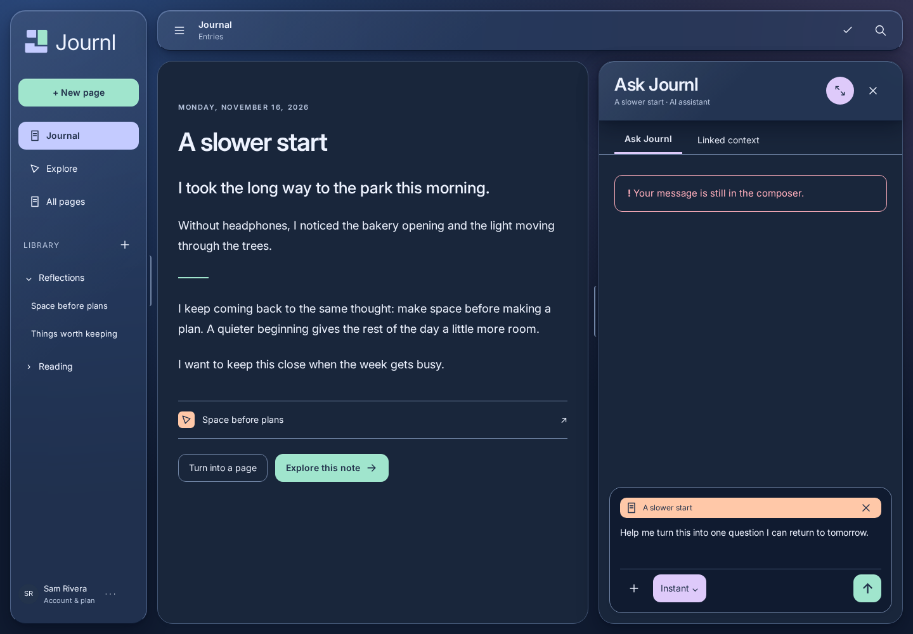
SHA256 1ef4535e46ec0c1c3d3796e364731c63dff5154a6922cea22580c71b395c13f9

SHA256 834fe8802694b0b34033380bb2c11c87bcfe0f12fd93131922952774dfd49186
You are offline
chat-offlineActions and implementation pointers
+ New page · Journal · Explore · All pages · ⌄ · Reflections · › · Reading · Turn into a page · Explore this note · Ask Journl · Linked context · Send · Instant ⌄ · ↑ · Entries · Timeline · Nov 16 · History · Close · Instant · Thinking
apps/web/src/components/assistant-ui/thread-components.tsxapps/web/src/components/assistant-ui/thread-sources.tsx

SHA256 2b2ceae033d5f17a73c3ec6648be0f669ded2c578342b44ae2e49f5d1c7752d7

SHA256 3f215b8dd61f2a8bda0a9554d32e072410fe782e066fd1cd29f7a0365d7455de

SHA256 e0a5fbcd43a8772254b7132b6070f0782083fd61cf7f04068243bb7c02b32417

SHA256 eae73f7205080713550b64fb311622bf51bcb7276eb3a8f98c28c29db509b326
Response interrupted
chat-response-errorActions and implementation pointers
+ New page · Journal · Explore · All pages · ⌄ · Reflections · › · Reading · Turn into a page · Explore this note · Ask Journl · Linked context · Copy · Retry · Instant ⌄ · ↑ · Entries · Timeline · Nov 16 · History · Close · Instant · Thinking
apps/web/src/components/assistant-ui/thread-components.tsxapps/web/src/components/assistant-ui/thread-sources.tsx

SHA256 73c02421e6707c8fa15306f32a73750d6787c7c90d54d464edd19282db321ae4

SHA256 0a7e289d98a2a24a07d9b338f2c51dd45319823c5e3ae2ce3b505e7e848504d3

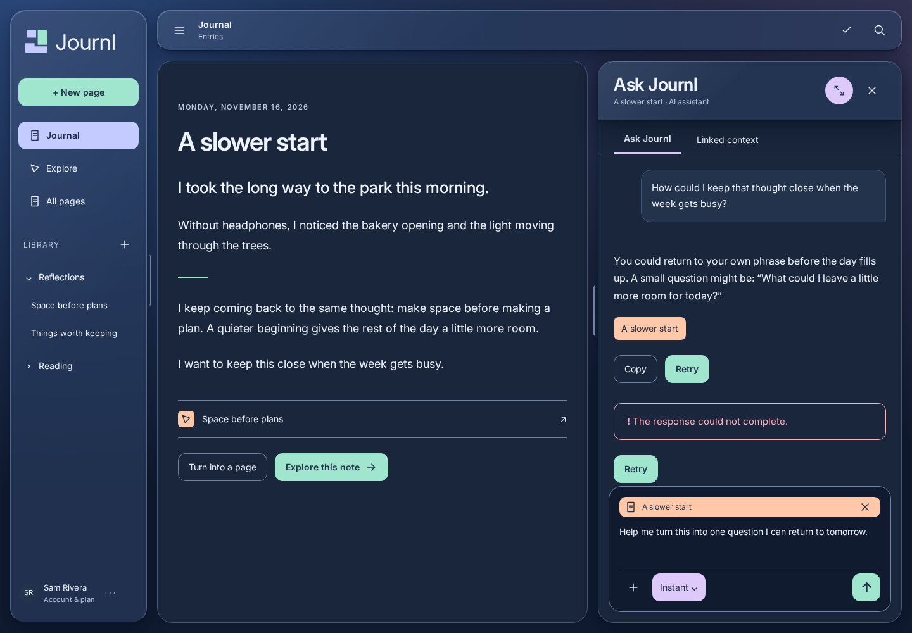
SHA256 95cc3553b73b48d9d89c864fa15ce795b89aa59edda4806c3b40cc454918c876

SHA256 b79a807fab8e77f678c061c505c6bdbbfd1d17e473e8e7d176171d559cd3bca0

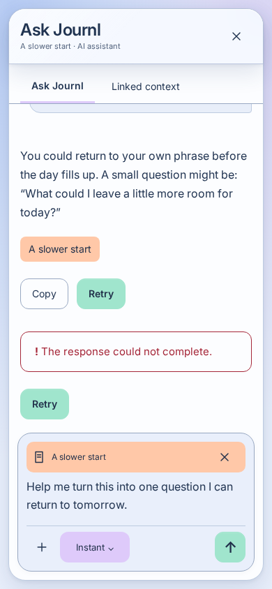
SHA256 5c463788cf04459828956e0ebce862120ca61afb404827a93668bcfbae67e4ae

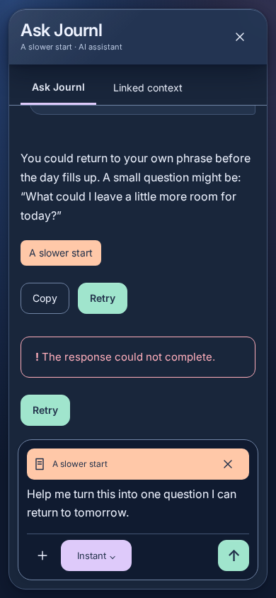
SHA256 f59c6f465974fca56572b14d01d0d8aed2f1969e922a87079b55dbebaf0dc140

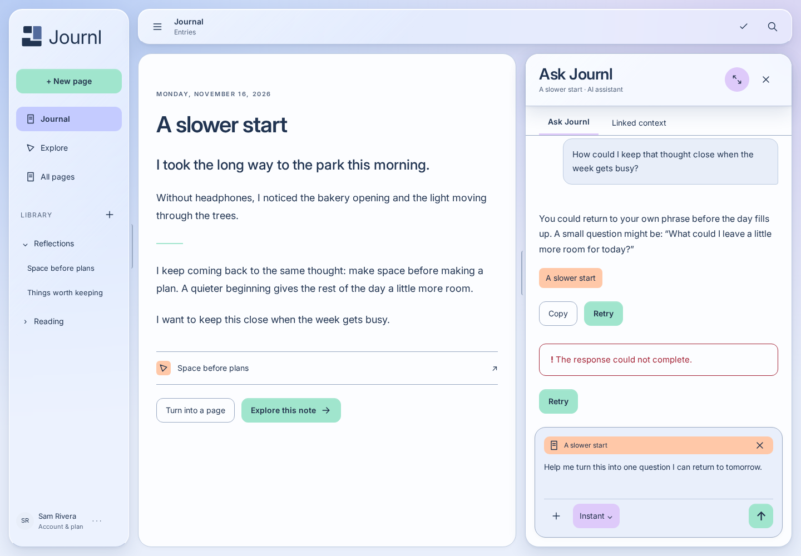
SHA256 993d877d1c2da68f4eb7291822bc8d300cdaccedfe7446daa055dcf0bf730e9b

SHA256 a97a4618f99ce6b710017d94b4385d2c435718a5ac295e5d825f14e9c3094053
Response stopped
chat-stoppedActions and implementation pointers
+ New page · Journal · Explore · All pages · ⌄ · Reflections · › · Reading · Turn into a page · Explore this note · Ask Journl · Linked context · Copy · Retry · Instant ⌄ · ↑ · Entries · Timeline · Nov 16 · History · Close · Instant · Thinking
apps/web/src/components/assistant-ui/thread-components.tsxapps/web/src/components/assistant-ui/thread-sources.tsx

SHA256 3e219a5d705b8663b979cc984e8c123a427ec839b69a8a08ee8001f071d8853b

SHA256 dbc9fbc0dc29ac4c61f5744792bf7d59cdedb7b14516392e97da0c3fd6708b74

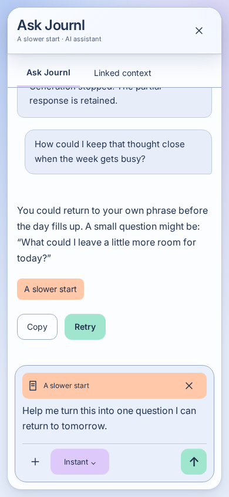
SHA256 65f306996d97720b8d14aac40dd4bf0fa3719b047667f97c8d3be16437c689d3

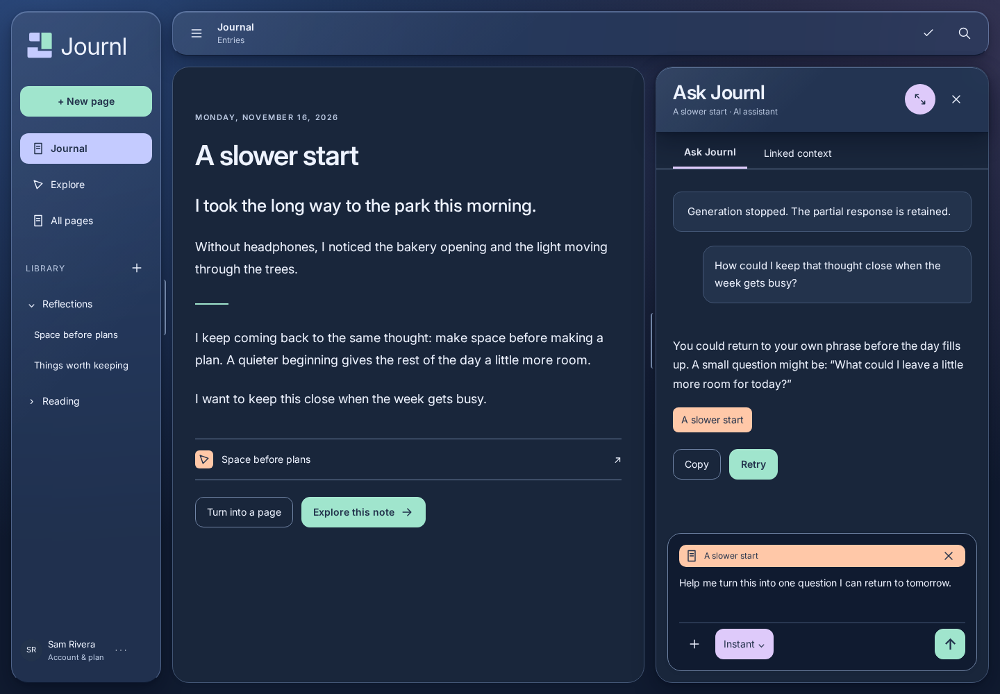
SHA256 f3c1bf0cb84b2f17f9a2e415888fc7b0071f7018a937e8dda83744f38c96a094

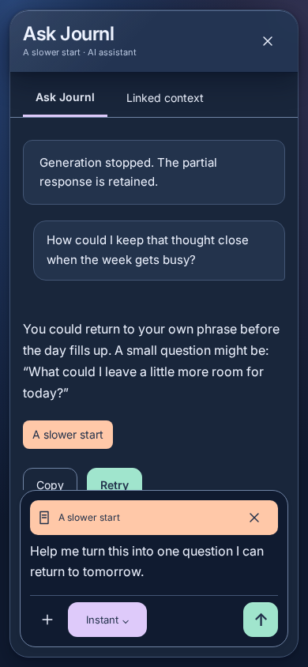
SHA256 a2449aa6d258cebc6b4972497e1f4241440469cb88a005fa2d866a3096577971

SHA256 7592851f625ad125814164f5abdc9573d9cb5877bb34196268f3f84d690ad8da
Reply copied
chat-copyActions and implementation pointers
+ New page · Journal · Explore · All pages · ⌄ · Reflections · › · Reading · Turn into a page · Explore this note · Ask Journl · Linked context · Copy · Retry · Instant ⌄ · ↑ · Entries · Timeline · Nov 16 · History · Close · Instant · Thinking
apps/web/src/components/assistant-ui/thread-components.tsxapps/web/src/components/assistant-ui/thread-sources.tsx

SHA256 dbe2661a506c7199972d382c504d9ef73fa88d5985ca8733a4f4f4a22d274591

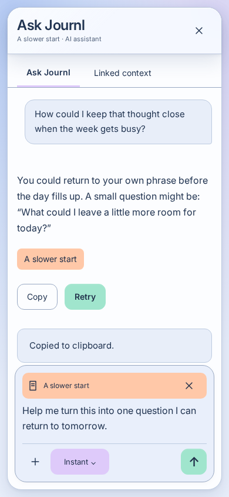
SHA256 69e361634936f46d934087cf9fd2e31ab6c33e4649550743f74e7eb7867b15e8

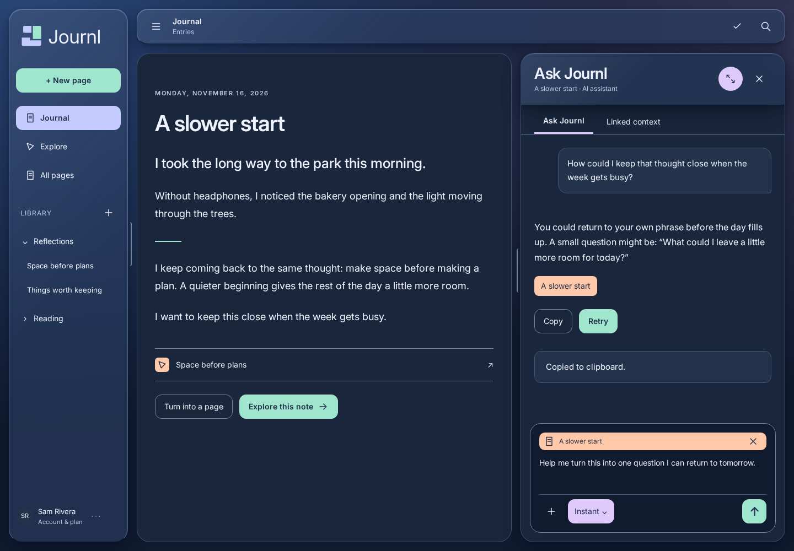
SHA256 74c23e9254d3009c7f06b1995b13cb03e36df683eea3189ff6bc04592fd94658

SHA256 ca1be469a287874d95d0ff2dabf3a5b83089376c285970a28b916d9e82df681f

SHA256 2cff1fa3462e806a89cf40e1efb5f6b3c65acdd88590842dea6679245f59f66d

SHA256 b324021da89ebcb795c5583157349e51de9b5701709f8a385feb685578870e86
Alternative replies
chat-branchesActions and implementation pointers
+ New page · Journal · Explore · All pages · ⌄ · Reflections · › · Reading · Turn into a page · Explore this note · Ask Journl · Linked context · Copy · Retry · Previous branch · 2 / 3 · Next branch · Instant ⌄ · ↑ · Entries · Timeline · Nov 16 · History · Close · Instant · Thinking
apps/web/src/components/assistant-ui/thread-components.tsxapps/web/src/components/assistant-ui/thread-sources.tsx

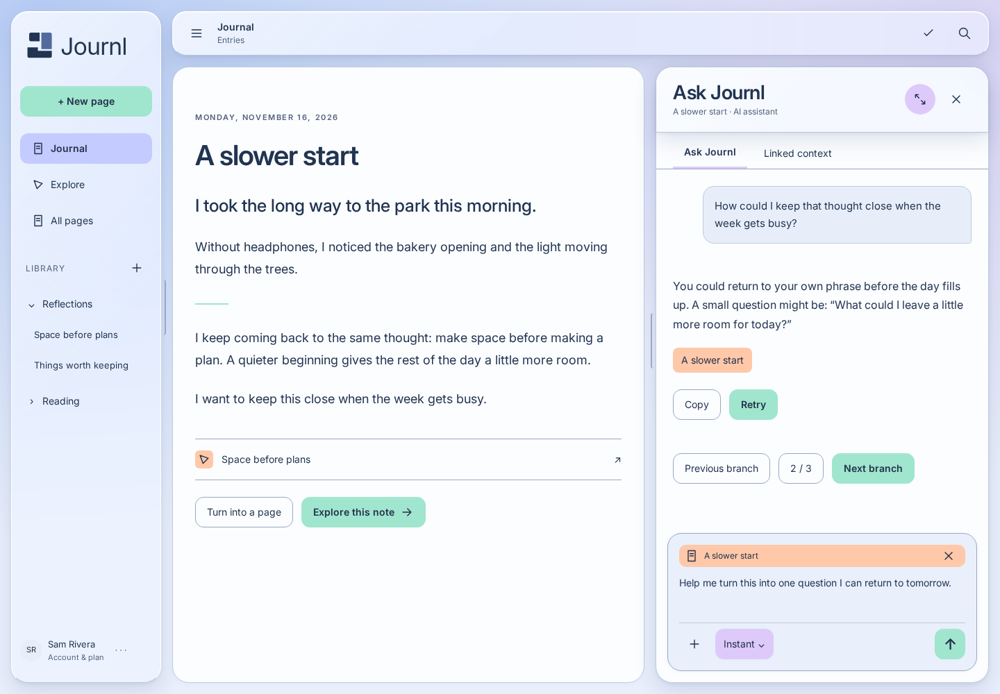
SHA256 dc61e4727198e15ce4ff8cff72265b03d47bc4f63098e6e788710a0b34b531c8

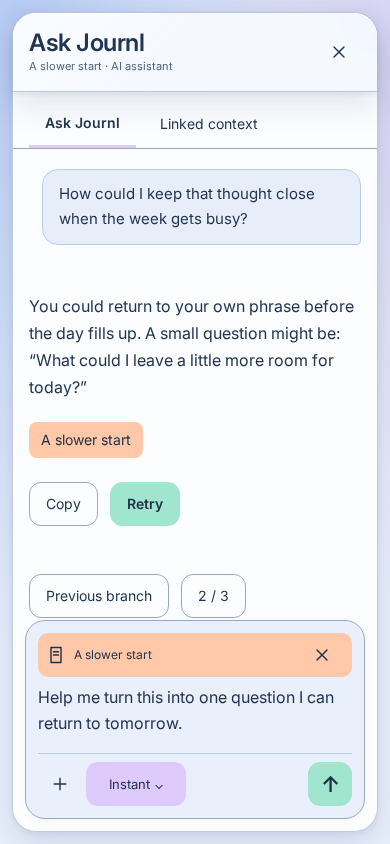
SHA256 c95288e0ee3b33733325910d536268683c4ae4225bacaedfc8b7d9846aaa0d60

SHA256 dbb72bac61f8564cca300e98eaf6e66cf88d529aeca15b9144747bc5ef89dce8

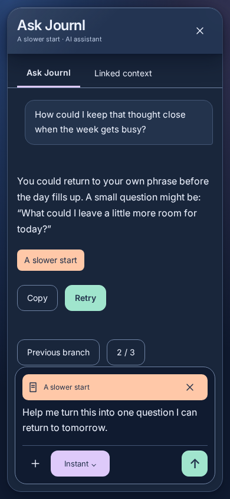
SHA256 d48ee81aee3fe5d0178dd771d92cc3324bbcb77029e47391720ddf9a2ad7641f

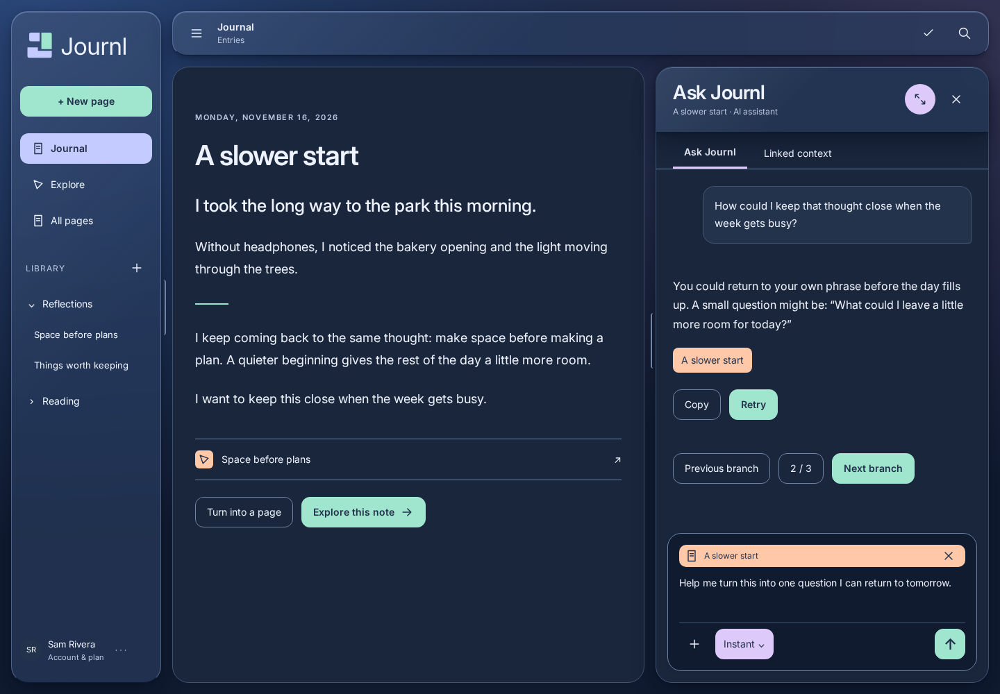
SHA256 35c1a3cba9c536f2262315ba2eb409ca00c2a30142a37a0a0775c341dce68ca1

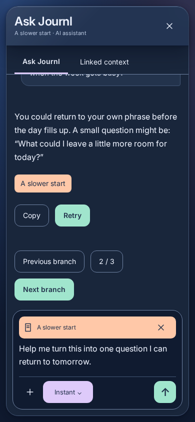
SHA256 340a91019c60260fd2fba367ff8c124dbb2dbcd6d1a70524a4c8ef56916a67eb
Reading earlier messages
chat-earlierActions and implementation pointers
+ New page · Journal · Explore · All pages · ⌄ · Reflections · › · Reading · Turn into a page · Explore this note · Ask Journl · Linked context · Copy · Retry · Scroll to bottom · Instant ⌄ · ↑ · Entries · Timeline · Nov 16 · History · Close · Instant · Thinking
apps/web/src/components/assistant-ui/thread-components.tsxapps/web/src/components/assistant-ui/thread-sources.tsx

SHA256 428c511ac76b4a9131d01cc6ac9c1b288c44a6732812b919f3c5b208c7b83c4f

SHA256 1e53915046bef9006fda50eddc0ce0365dc9a7c38803e989d80155ba7f4f7a2a

SHA256 00da226db4a1cdaf1b0aa43c4f0af4dee98f999b6eef559b101240cc3c0186f3

SHA256 7cf23e01082cce468e346b0d264fe640ba0e2e4d9299383dc4f7fd5f4a783431
AI usage limit reached
quota-freeActions and implementation pointers
+ New page · Journal · Explore · All pages · ⌄ · Reflections · › · Reading · Turn into a page · Explore this note · Ask Journl · Linked context · Message Ask Journl · Instant · Send · Account & plan · Instant ⌄ · ↑ · Entries · Timeline · Nov 16 · History · Close · Thinking
apps/web/src/components/assistant-ui/thread-components.tsxapps/web/src/components/assistant-ui/thread-sources.tsx

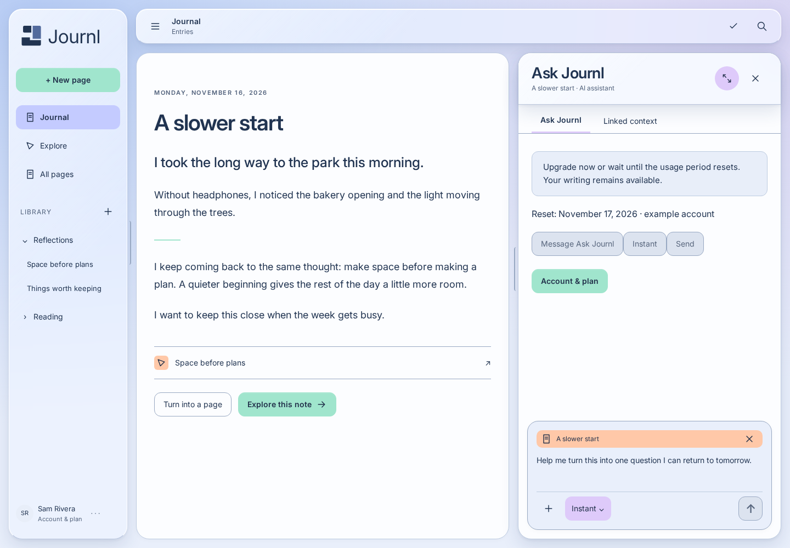
SHA256 4effc04c7065f25f9ef6b0c6a438f17d8a2c0bd256f29ee8eecb76473992ff33

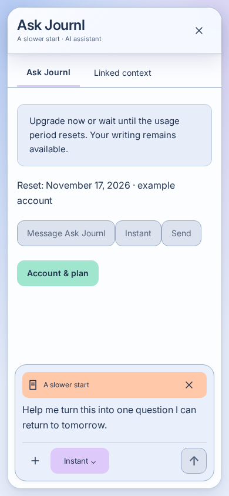
SHA256 8b9fe6627e60f7defd843d9008785941e09eb9cbfb083146136cbae528bba62e

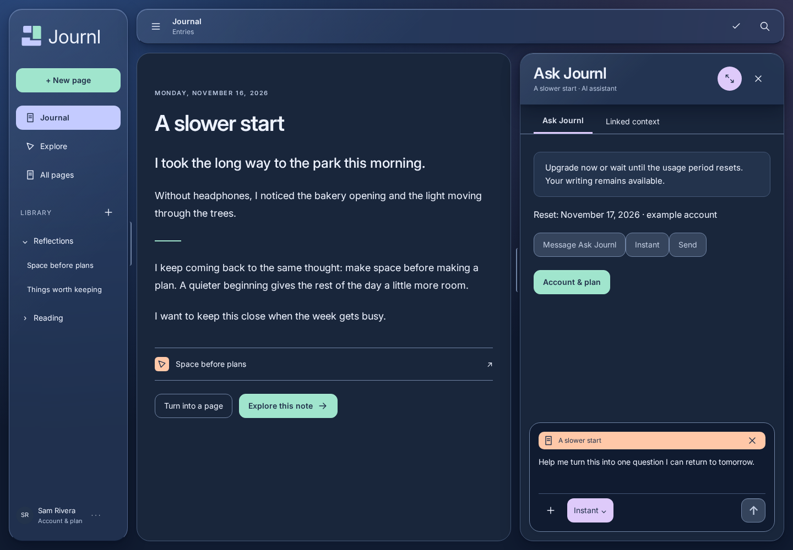
SHA256 64b0bda76214282662f8dd4a16485a067fbc37d7156b8a85acedb48ba5815714

SHA256 4ad086feb3bef251c42b77b471c055696258b96043b16fa62be20a89b0f4fae5
AI usage limit reached
quota-proActions and implementation pointers
+ New page · Journal · Explore · All pages · ⌄ · Reflections · › · Reading · Turn into a page · Explore this note · Ask Journl · Linked context · Message Ask Journl · Instant · Send · Instant ⌄ · ↑ · Entries · Timeline · Nov 16 · History · Close · Thinking
apps/web/src/components/assistant-ui/thread-components.tsxapps/web/src/components/assistant-ui/thread-sources.tsx

SHA256 3d62a594a0845e5982448eb8ee4b7bed9e729e3ab051beb99898c3f666351ef2

SHA256 5691beafeb8fbcfca2e654f4fdd6cec025115635c7b7f48374b92cb143b3955e

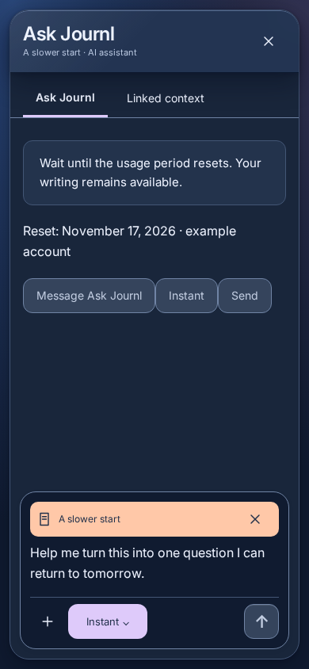
SHA256 560605d4c9185854e20fe5fe35285e381ae5d8917366e213f4423c6062ba9e1b

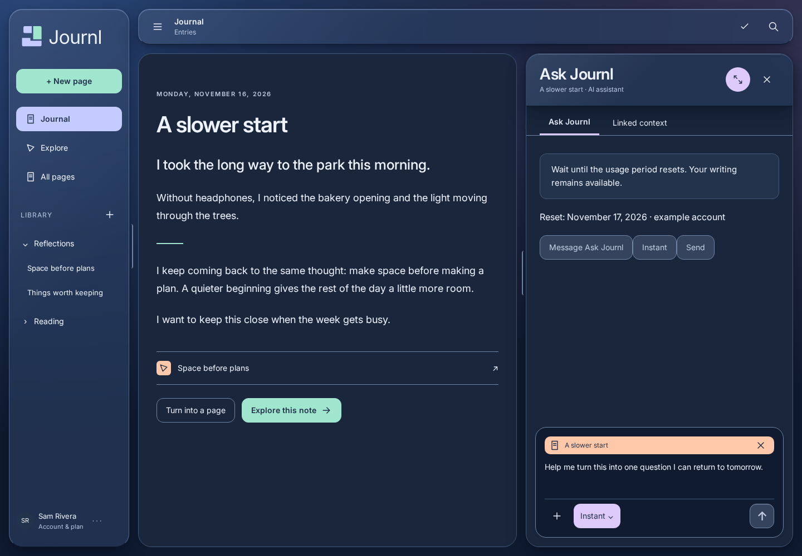
SHA256 08ffad2ed04fce41c1a40f7a9dc39c3981e8ecafa9fe5cac8078157b0944b15f
Ready for another conversation
quota-resetActions and implementation pointers
+ New page · Journal · Explore · All pages · ⌄ · Reflections · › · Reading · Turn into a page · Explore this note · Ask Journl · Linked context · Instant ⌄ · ↑ · Entries · Timeline · Nov 16 · History · Close · Instant · Thinking
apps/web/src/components/assistant-ui/thread-components.tsxapps/web/src/components/assistant-ui/thread-sources.tsx

SHA256 a31f42c731620a56c4d4cb7636c0d524cd16865ad3ac75796ba8447cfc15418d

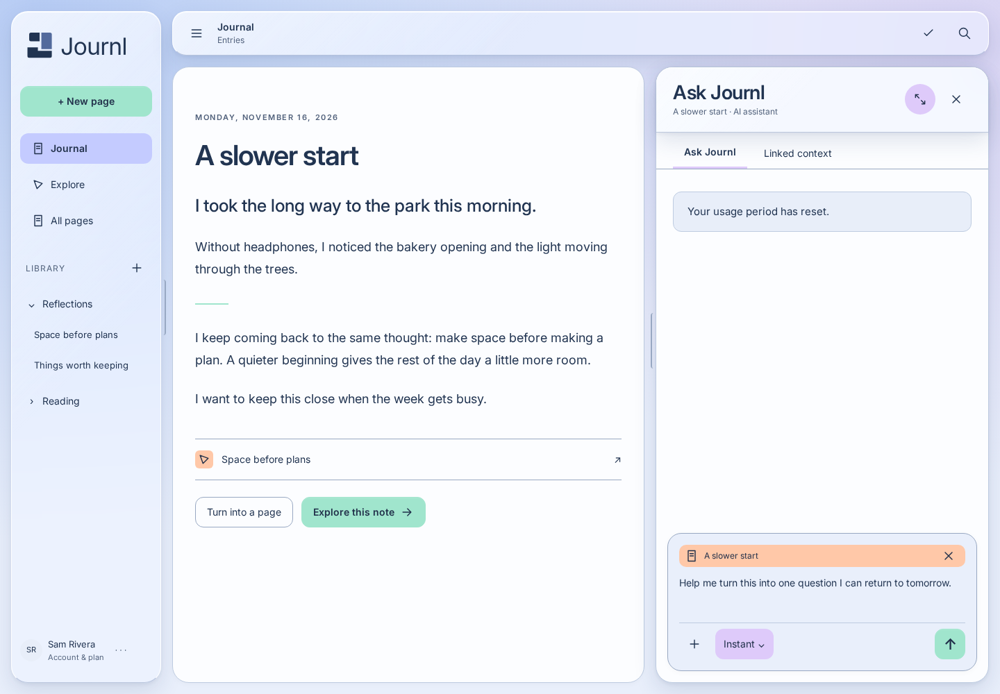
SHA256 8d0eebee1156b918680c2ba6fd58d8580490be71ee78faa1d3aaa7c4b41ddbeb

SHA256 c3d83f02fbf8b995d1c21eec88fb860c3449645ec1e147f0c586efff42fadf6a

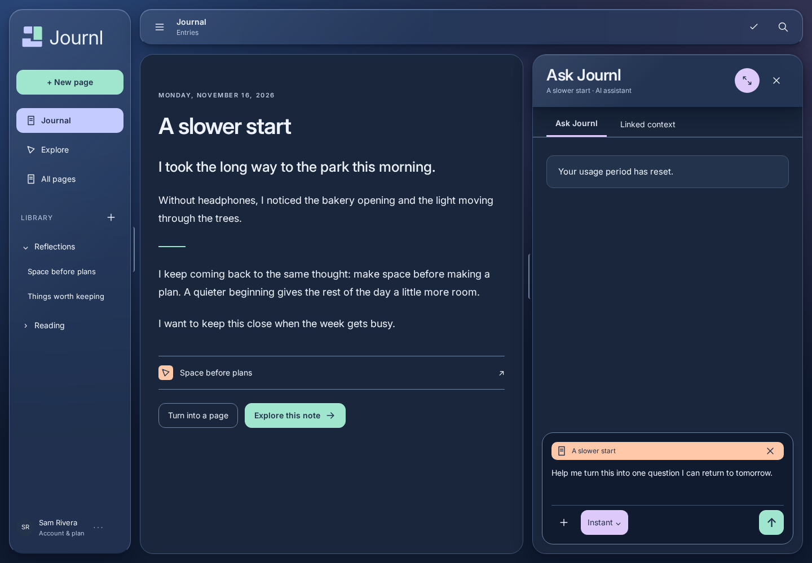
SHA256 5581f23003b0a3fafd95dcf1dc22fb3299f8a1e382ce58cb9dfaa258356c18c1